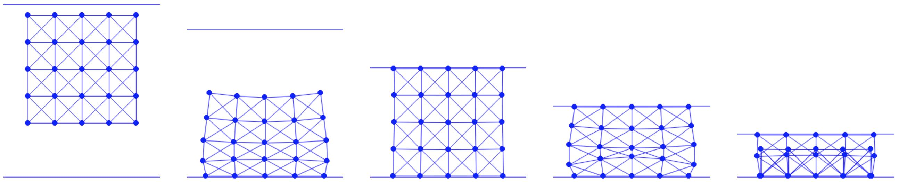

Case Study: Compressing Square
We simulate compressing an elastic square using a ceiling.
The excutable Python project for this section can be found at https://github.com/phys-sim-book/solid-sim-tutorial under the 5_mov_dirichlet folder.
MUDA GPU implementations can be found at https://github.com/phys-sim-book/solid-sim-tutorial-gpu under the simulators/5_mov_dirichlet folder.
The ceiling in our simulation is modeled as a half-space with a downward normal vector . The distance from the ceiling to other simulated Degrees of Freedom (DOFs) can be calculated using Equation (7.1.1). To effectively apply the penalty method, it's necessary that the ceiling's height also serves as a DOF.
Following the approach used in the Square on Slope project, we choose the origin on the ceiling as the DOF and incorporate it into the variable :
Implementation 11.2.1 (Ceiling DOF setup, simulator.py).
[x, e] = square_mesh.generate(side_len, n_seg) # node positions and edge node indices
x = np.append(x, [[0.0, side_len * 0.6]], axis=0) # ceil origin (with normal [0.0, -1.0])
The ceiling is initially positioned directly above the elastic square, as shown in the left image of Figure 11.2.1. By doing so, we ensure that the nodal mass of this newly added DOF is consistent with the other simulated nodes on the square, as per our implementation.
With this additional DOF, we can straightforwardly model the contact between the ceiling and the square. This is done by enhancing the existing functions that compute the barrier energy value, gradient, Hessian, and the initial step size:
Implementation 11.2.2 (Barrier energy value, BarrierEnergy.py).
n = np.array([0.0, -1.0])
for i in range(0, len(x) - 1):
d = n.dot(x[i] - x[-1])
if d < dhat:
s = d / dhat
sum += contact_area[i] * dhat * kappa / 2 * (s - 1) * math.log(s)
Implementation 11.2.3 (Barrier energy gradient, BarrierEnergy.py).
n = np.array([0.0, -1.0])
for i in range(0, len(x) - 1):
d = n.dot(x[i] - x[-1])
if d < dhat:
s = d / dhat
local_grad = contact_area[i] * dhat * (kappa / 2 * (math.log(s) / dhat + (s - 1) / d)) * n
g[i] += local_grad
g[-1] -= local_grad
Implementation 11.2.4 (Barrier energy Hessian, BarrierEnergy.py).
n = np.array([0.0, -1.0])
for i in range(0, len(x) - 1):
d = n.dot(x[i] - x[-1])
if d < dhat:
local_hess = contact_area[i] * dhat * kappa / (2 * d * d * dhat) * (d + dhat) * np.outer(n, n)
index = [i, len(x) - 1]
for nI in range(0, 2):
for nJ in range(0, 2):
for c in range(0, 2):
for r in range(0, 2):
IJV[0].append(index[nI] * 2 + r)
IJV[1].append(index[nJ] * 2 + c)
IJV[2] = np.append(IJV[2], ((-1) ** (nI != nJ)) * local_hess[r, c])
Implementation 11.2.5 (Initial step size calculation, BarrierEnergy.py).
n = np.array([0.0, -1.0])
for i in range(0, len(x) - 1):
p_n = (p[i] - p[-1]).dot(n)
if p_n < 0:
alpha = min(alpha, 0.9 * n.dot(x[i] - x[-1]) / -p_n)
Here for the distance between the ceiling and a node , we have the stacked quantities locally:
Now we apply the moving BC on the ceiling to compress the elastic square. We set the ceiling's DOF, identified by the node index (n_seg+1)*(n_seg+1), as the sole Dirichlet Boundary Condition (DBC) in this scene. We assign it a downward velocity of . The movement is stopped when the ceiling reaches a height of :
Implementation 11.2.6 (DBC setup, simulator.py).
DBC = [(n_seg + 1) * (n_seg + 1)] # dirichlet node index
DBC_v = [np.array([0.0, -0.5])] # dirichlet node velocity
DBC_limit = [np.array([0.0, -0.6])] # dirichlet node limit position
Then we implement the penalty term according to Equation (11.1.1), which is essentially a quadratic spring energy for controlling the motion of the ceiling:
Implementation 11.2.7 (Spring energy computation, SpringEnergy.py).
import numpy as np
def val(x, m, DBC, DBC_target, k):
sum = 0.0
for i in range(0, len(DBC)):
diff = x[DBC[i]] - DBC_target[i]
sum += 0.5 * k * m[DBC[i]] * diff.dot(diff)
return sum
def grad(x, m, DBC, DBC_target, k):
g = np.array([[0.0, 0.0]] * len(x))
for i in range(0, len(DBC)):
g[DBC[i]] = k * m[DBC[i]] * (x[DBC[i]] - DBC_target[i])
return g
def hess(x, m, DBC, DBC_target, k):
IJV = [[0] * 0, [0] * 0, np.array([0.0] * 0)]
for i in range(0, len(DBC)):
for d in range(0, 2):
IJV[0].append(DBC[i] * 2 + d)
IJV[1].append(DBC[i] * 2 + d)
IJV[2] = np.append(IJV[2], k * m[DBC[i]])
return IJV
Next, we focus on optimizing with the spring energies while properly handling the convergence check and penalty stiffness adjustments. At the start of each time step, the target position for each DBC node is computed, and the penalty stiffness, , is initialized to . If certain nodes reach their preset limit, we then set the target as their current position:
Implementation 11.2.8 (DBC initialization, time_integrator.py).
DBC_target = [] # target position of each DBC in the current time step
for i in range(0, len(DBC)):
if (DBC_limit[i] - x_n[DBC[i]]).dot(DBC_v[i]) > 0:
DBC_target.append(x_n[DBC[i]] + h * DBC_v[i])
else:
DBC_target.append(x_n[DBC[i]])
Entering the Newton loop, in each iteration, just before computing the search direction, we assess how many DBC nodes are close enough to their target positions. We store these results in the variable DBC_satisfied:
Implementation 11.2.9 (DBC satisfaction check, time_integrator.py).
# check whether each DBC is satisfied
DBC_satisfied = [False] * len(x)
for i in range(0, len(DBC)):
if LA.norm(x[DBC[i]] - DBC_target[i]) / h < tol:
DBC_satisfied[DBC[i]] = True
Then we only eliminate the DOFs of those DBC nodes that already satisfy the boundary condition:
Implementation 11.2.10 (DOF elimination, time_integrator.py).
# eliminate DOF if it's a satisfied DBC by modifying gradient and Hessian for DBC:
for i, j in zip(*projected_hess.nonzero()):
if (is_DBC[int(i / 2)] & DBC_satisfied[int(i / 2)]) | (is_DBC[int(j / 2)] & DBC_satisfied[int(j / 2)]):
projected_hess[i, j] = (i == j)
for i in range(0, len(x)):
if is_DBC[i] & DBC_satisfied[i]:
reshaped_grad[i * 2] = reshaped_grad[i * 2 + 1] = 0.0
return [spsolve(projected_hess, -reshaped_grad).reshape(len(x), 2), DBC_satisfied]
The BC satisfaction information stored in DBC_satisfied is also used to check convergence and update when needed:
Implementation 11.2.11 (Convergence criteria, time_integrator.py).
[p, DBC_satisfied] = search_dir(x, e, x_tilde, m, l2, k, n, o, contact_area, (x - x_n) / h, mu_lambda, is_DBC, DBC, DBC_target, DBC_stiff[0], tol, h)
while (LA.norm(p, inf) / h > tol) | (sum(DBC_satisfied) != len(DBC)): # also check whether all DBCs are satisfied
print('Iteration', iter, ':')
print('residual =', LA.norm(p, inf) / h)
if (LA.norm(p, inf) / h <= tol) & (sum(DBC_satisfied) != len(DBC)):
# increase DBC stiffness and recompute energy value record
DBC_stiff[0] *= 2
E_last = IP_val(x, e, x_tilde, m, l2, k, n, o, contact_area, (x - x_n) / h, mu_lambda, DBC, DBC_target, DBC_stiff[0], h)
Now, we proceed to run the simulation, which involves severely compressing the dropped elastic square as depicted in (Figure 11.2.1). From the final static frame, we observe that the elastic springs on the edges are inverted due to extreme compression. This artifact is typical in mass-spring models of elasticity. In future chapters, we will explore how applying finite-element discretization to barrier-type elasticity models, such as the Neo-Hookean model, can prevent such issues. That approach is akin to the enforcement of non-interpenetrations in our current simulations.
